资料
言语
模块
（一）图形推理
（二）定义判断
（三）类比推理
（四）逻辑判断
做题顺序
（一）图形推理
1.看图形判断题型
2.根据题型对应方法解题
（二）定义判断
1.看题目，属于不属于
2.看材料解题
（三）类比推理
1.看材料解题
（四）逻辑判断
1.看题目判断题型
2.根据题型对应方法解题
题型与解法
一、图形
1.一条图型
（1）移动
（2）遍历
（3）叠加，不考
（4）属性
（5）数量
（6）比较
（7）相对位置
2.两条图型
（1）移动
（2）遍历
（3）叠加
（4）属性
（5）数量
（6）比较
（7）相对位置
3.九宫格型
（1）移动
（2）遍历
（3）叠加
（4）属性
（5）数量
（6）比较
（7）相对位置
4.分类型
（1）移动，不考
（2）遍历，不考
（3）叠加，不考
（4）属性
（5）数量
（6）比较
（7）相对位置
因为一条图、两条图、九宫格、分类型都采用一样的解法，所以把他们单列如下：
（1）移动
样子相同的元素，数量也相同，一般考移动
①平移
1）平移方向
上下平移：垂直方向元素数量不变
左右平移：水平方向元素数量不变
斜线平移：朝对角线方向移动
环形平移：分内外圈
判断平移的方法：就近假设
2）平移步数
恒定步数
递增步数
3）平移样式
循环跑
往返跑
②旋转
1）旋转方向
顺时针
逆时针
2）旋转角度
固定角度
递增角度
③翻转
1）翻转方向
左右翻转
上下翻转
2）时针法判断图形翻转
选择两点，从一点沿小于180方向到另一点画箭头，看是顺时针还是逆时针
（2）遍历
样子相同的元素，数量也相同，可能还考遍历
如果是多条图，每一条相同元素的数量应该相等；
如果是一条图，每一格都有相同元素
（3）叠加
元素相似，一般考叠加
①加减同异
元素相加
元素相减
元素求同去异
元素求异去同
还有一种旋转+叠加的题型：哪个特殊先转哪个
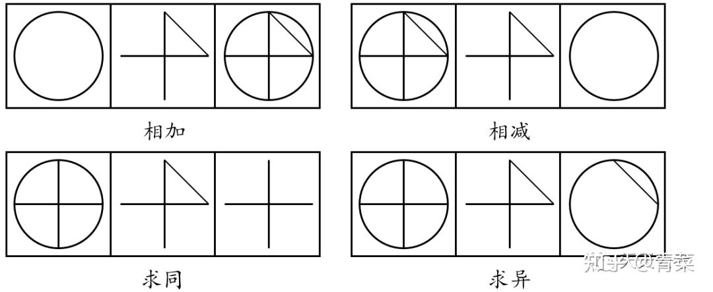
②黑白运算
黑+白
白+黑
黑+黑
白+白
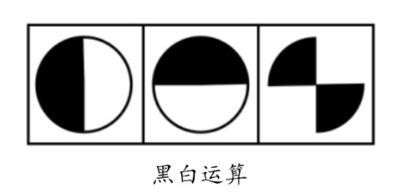
（4）属性
元素不相同不相似，一般考属性
①对称
对称形式
1）轴对称
对称轴数量
对称轴方向
对称轴与其他图形关系：包括轴与轴，轴与其他图形
2）中心对称
N S Z O H
如果一个图形有两条相互垂直的对称轴，那么它一定是中心对称的。
3）轴+中心对称
田 日
对称部分
1）整体对称
2）部分对称：最大最小面，黑白面
②曲直
1）全曲
2）全直
3）曲+直
③一笔画
（5）数量
元素不相同不相似，还考属性
①数量形式
1）恒定数量
2）等差数量
3）a+b=c
4）a+b+c=固定数
5）a1+a2=b1+b2=c1+c2
②数量对应的元素
1）点的数量
全部点数
特定点数
曲直点
内外点
交点切点
2）线的数量
全部线数
特定线数
曲直线
内外线
横竖线
平行线组
3）面的数量
全部面数
特定面数
曲直面
内外面
特定形式面
相同相似面
4）角数量
全部角数
特定角数
内外角
锐角直角钝角
5）素的数量
元素种类数
元素个数
全部个数
特定个数
元素换算
6）部分数
不连通的就不是一个部分
7）混合数
点数与点数计算
点数与线数
点数与面数
线数与线数
线数与面数
面数与面数
（6）比较
数量多少
线长短
面大小
角度大小
（7）相对位置
点点：重合，连线，共线，共面
点线：点在线上，点对应线类型
点面：点在面内外上下左右，点对应面类型
线线：平行，垂直，夹角，箭头方向
线面：线在面内外上下左右，相离，相切，相交，包含
面面：面在面内外上下左右，相离，相切，相交（相交于点，相交于线，相交于面），包含；相同相似
元素与元素：相邻，间隔，重合
5.展开图型
（1）正方体展开
1）相对面
有且仅有一个出现
一行里的相隔的两个是相对面
z字的两端是相对面
2）相邻面
箭头法判断一个面的上下左右是哪个面
箭头可以在一个面上，也可以在两个面上
（2）正方体展开图：
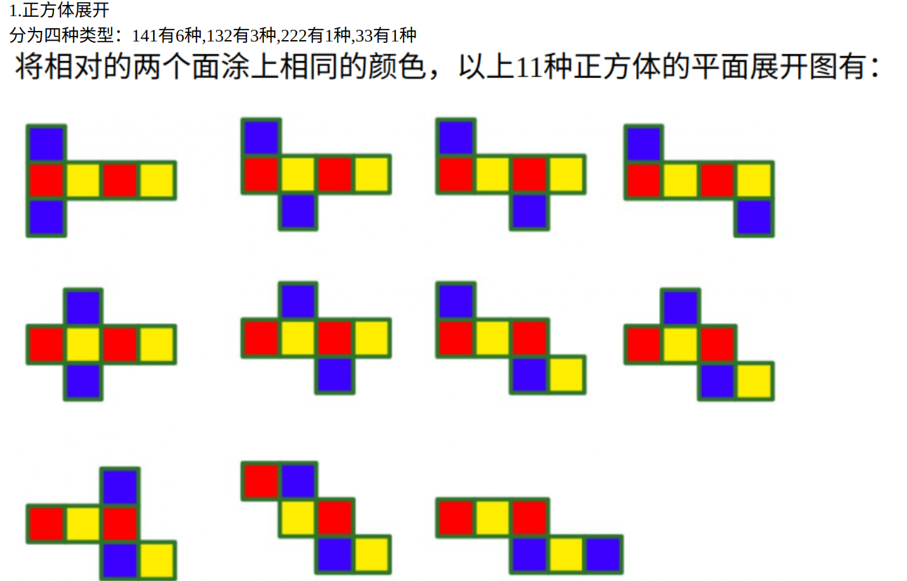
（3）正方体展开图中边的对应关系：
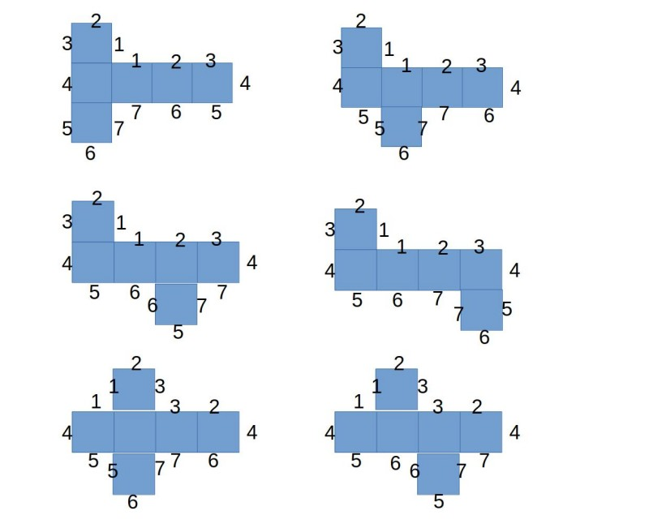
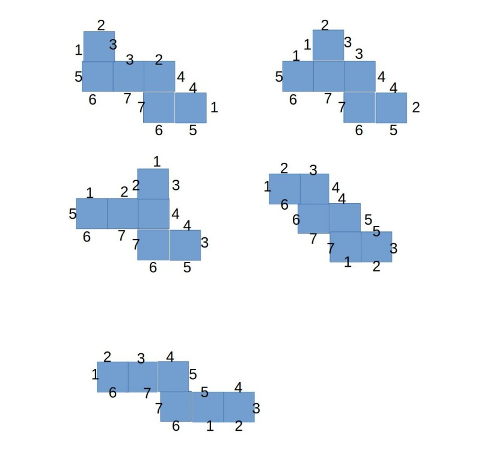
6.三视图型
正视图
左视图
俯视图
7.截面图型
正方体截面：正方形，长方形，三角形，梯形
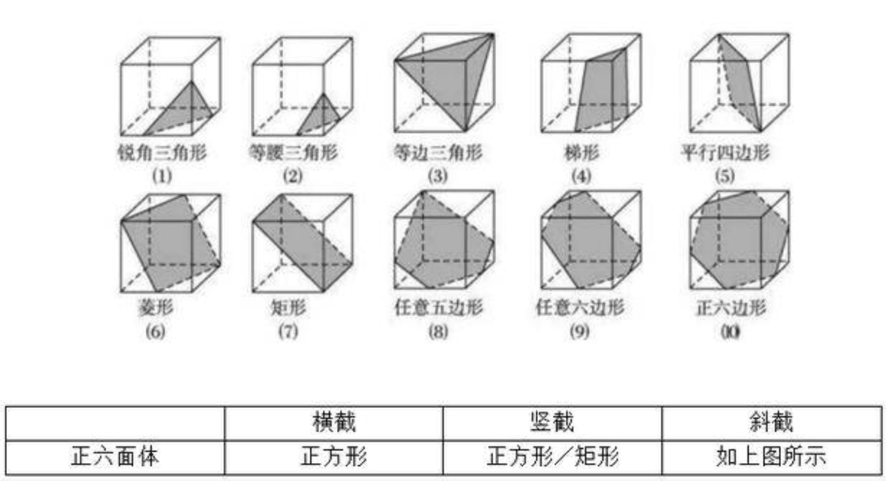
圆柱截面
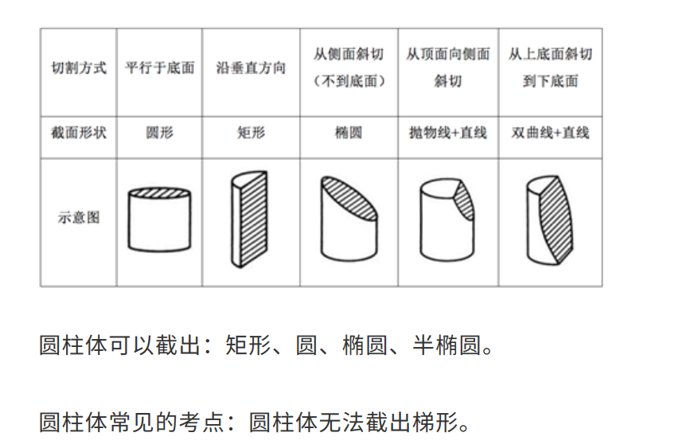
圆锥截面
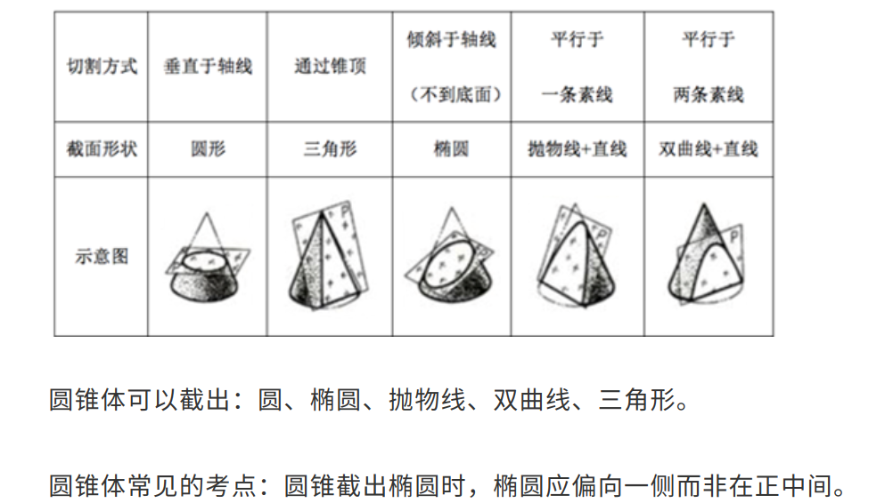
二、定义
1.看题目属于还是不属于
2.看材料找关键词
（1）主体，客体
（2）手段，目的
（3）时间，地点
（4）原因，结果
3.关键词不符合的一定不选，关键词没提及的保留
选最符合的那个
A不符合1个关键词
B符合1个没提到2个
C符合2个没提到1个
D符合3个
当然是D
三、类比
1.语义关系
（1）近义，反义
（2）比喻，象征
2.逻辑关系
（1）全同
（2）并列：矛盾，反对
（3）交叉
（4）包含：种属，组成
（5）条件：充分，必要，充要
（6）因果
3.对应：
（1）材料：主要 次要
（2）工艺：物理 化学
（3）工具
（4）功能：主要 次要
（5）属性：主要 次要；必然 可能
（6）时间
（7）地点
（8）配套
（9）职业
（10）依据
4.语法关系
（1）主谓
（2）动宾
（3）主宾
（4）偏正
造句：能不加字就不加，加的字要一样
5.二级分析
（1）词性
（2）感情色彩
（3）词语结构
（4）范畴 古今中外 雅俗自他
（5）主体是否相同
四、逻辑
（一）形式逻辑
形式逻辑是一门科学。研究对象是思维。
（二）思维
思维是人脑对客观的反映，而且必须以语言为载体。
（三）思维形式
思维形式：概念，判断，推理
（四）思维形式结构
思维形式结构：提取出的共同且不变的东西，是规则和规律，包括常项和变项
（五）三种思维形式
1.概念
语词 对应 概念
概念：反映某个事物
要求：具体明确
内涵：事物的本质特征
外延：一个个事物
反变关系：内涵越少，外延越多；内涵越多，外延越少。
逻辑方法：
限制：增加内涵，减少外延
概括：减少内涵，增加外延
定义：明确内涵。包括被定义项，定义项，联项。
划分：明确外延。包括母项，子项，根据
2.判断
命题 对应 判断
判断：对概念的肯定或否定
命题：表达判断的句子
命题分类
（1）简单命题
①性质命题
②关系命题
（2）复合命题
①假言命题
②联言命题
③选言命题
④负命题
（3）模态命题
①真值模态命题
②规范模态命题
3.推理
由一个或多个判断推出另一个判断；
由一个或多个命题推出另一个新命题
包括前提，结论，推理形式。
要求：前提为真；推理形式为真
推理分类：
演绎推理
归纳推理
类比推理
（六）演绎推理
简单命题：
1.性质命题：断定事物具有或不具有某种性质的命题。
包括主项，谓项，联项，量项
分为全称肯定，全称否定，特称肯定，特称否定
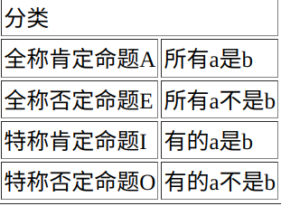
性质命题真值表
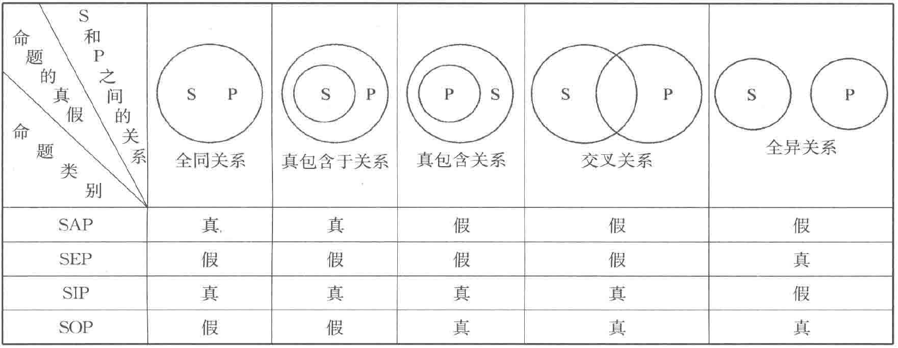
性质命题的推理：
（1）直接推理：由一个推另一个
换质位
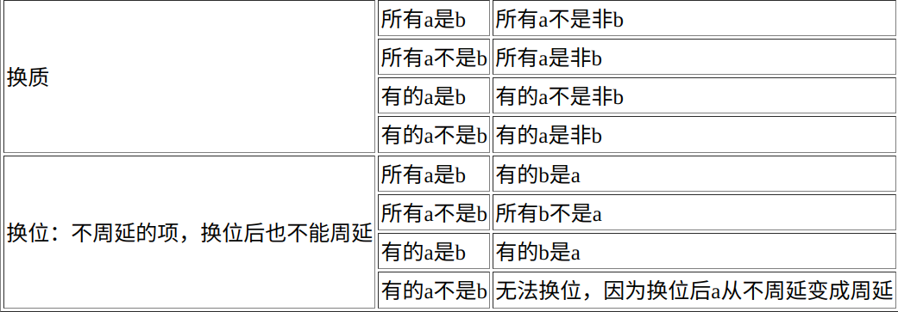
周延：一个项周延，说明它涉及所有外延
逻辑方阵
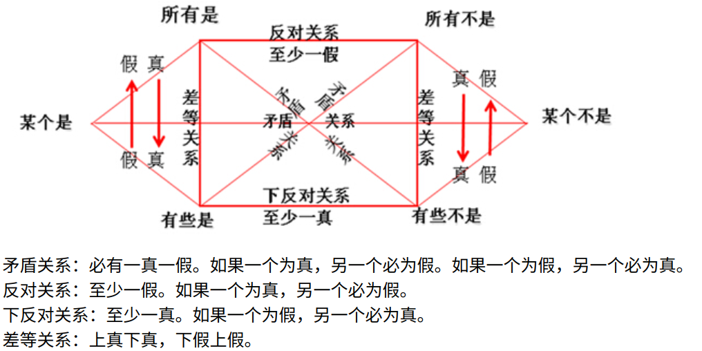
并非所有A是B = 有的A不是B
并非所有A不是B = 有的A是B
并非有的A是B = 所有A不是B
并非有的A不是B = 所有A是B
（2）三段论推理：由两个推另一个
这三个命题分别称为：大前提，小前提，结论。
小项：结论主项，使用的是小前提的主项
大项：结论谓项，使用的是大前提的谓项
中项：结论没出现的项
要求：中项至少周延一次；前提中不周延的项，结论中也不周延；前提与结论否定数一样（同是0次或1次）；前提之一是特称，结论必是特称。
2.关系命题：断定两个事物之间的关系
包括关系项，关系者项，量项
关系分为：对称关系，传递关系
关系推理分为：
纯关系推理，分为直接关系推理，一个推另一个；间接关系推理，两个推另一个。
混合关系推理，关系+性质
复合命题：
复合命题是把简单命题用运算符连接起来的命题，复合命题的真值取决于简单命题的真值和运算规则。
1.联言命题：断定若干事物同时为真
格式：p∧q
对应语词：与，和，且，而且，虽然但是，尽管还，不仅还，既又
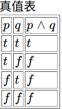
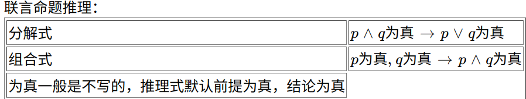
2.选言命题：断定至少有一个为真
分为两种：
①相容析取
肢命题可以同时为真
对应语词：或，或者
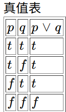
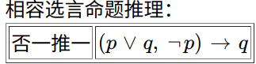
②不相容析取
肢命题不能同时为真
对应语词：要么要么
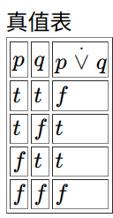
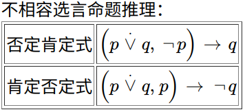
3.假言命题：断定条件关系
分为：
①充分条件
格式：p→q
对应语词：如果 那么，若 则，只要 就，要想 就要。否则（否前则后）也算
真值表：前真后假时为假
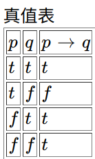
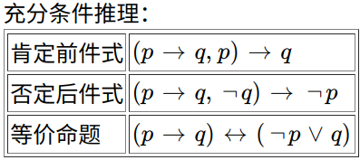
②必要条件
格式：p←q
对应语词：只有 才，不 就不，没有 就没有，p是q的基础/前提/不可或缺/必不可少的
真值表：前假后真时为假
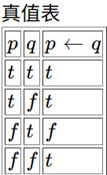
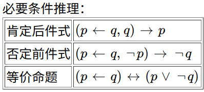
③充要条件
格式：p↔q
对应语词：当且仅当
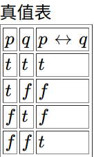
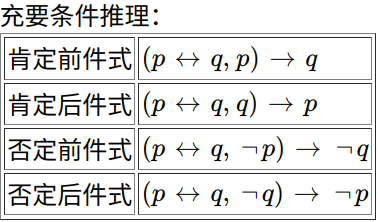
特别注意：
除非a。顾名思义，就是除了非a，除了就是减去，全集减去非a，那就只剩下a，所以除非a就等于只有a。表示唯一条件。
a，否则b。顾名思义，就是否定前面的会推出后面的，否前则后。非a推b。
4.负命题：对原命题的否定
格式：¬p
对应语词：并非
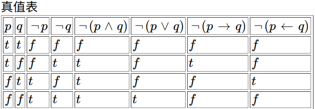
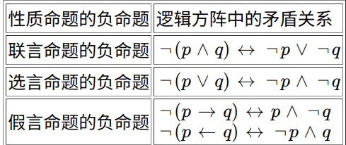
5.二难推理
两个假言命题和一个选言命题组合在一起的命题，也称为假言选言命题
二难推理
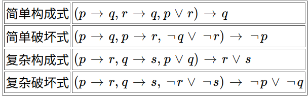
6.复合命题判定方法是什么
（1）判定两个复合命题是否等值或矛盾
两个命题等值，当且仅当在肢命题等值时，复合命题的值相同
两个命题矛盾，当且仅当在肢命题等值时，复合命题的值相反
使用真值表判定两个命题是否等值或矛盾，如果每一行两个命题的值相同，那么两者等值；如果每一行两个命题的值相反，那么两者矛盾
（2）判定一个复合命题是否是重言式
重言式是不论肢命题值如何，复合命题的值总是真。也称为永真式。
1）使用真值表判定一个命题是否是重言式
2）使用归谬法判定一个命题是否是重言式
使用归谬法时，要先把命题转化成假言命题
归谬法步骤：
先假设它不是重言式，即存在前真后假的情况
然后求各肢命题的值
求完值之后，如果存在矛盾，即某一肢命题既真又假，那么就说明，前真后假是不可能的，这就证明了命题是重言式；如果不存在矛盾，就证明命题不是重言式。
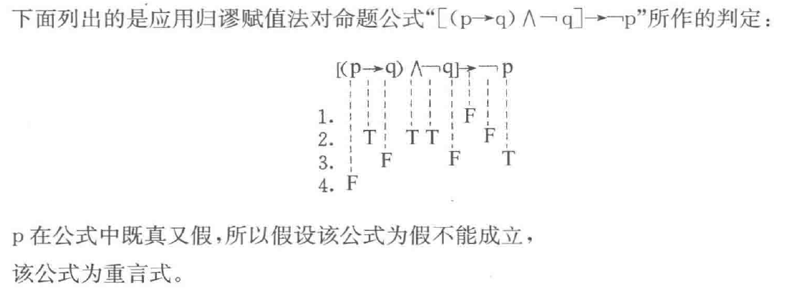
模态命题
模态命题是带模态词的命题。
1.真值模态命题：必然，可能
模态词是必然，可能
必然p
必然非p
可能p
可能非p
真值模态命题推理
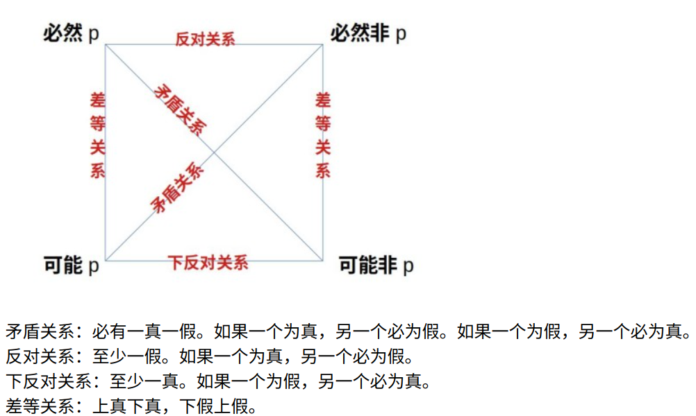
并非必然p = 可能非p
并非必然非p = 可能p
并非可能p = 必然非p
并非可能非p = 必然p
2.规范模态命题：必须，允许
模态词是必须，允许(可以）
必须p
必须非p
允许p
允许非p
规范模态命题推理
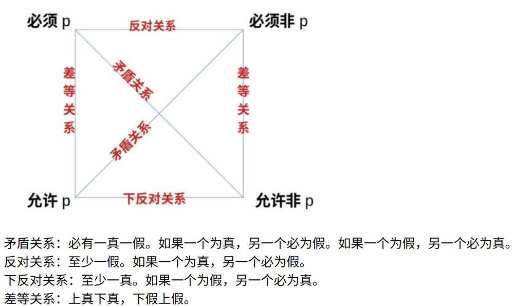
并非必须p = 允许非p
并非必须非p = 允许p
并非允许p = 必须非p
并非允许非p = 必须p
（七）归纳推理
归纳推理：实质是建立条件关系
p∧q为真，所以p→q
1.完全归纳
全部个体，每一个都具有该种性质，因此得出结论：该类对象都具有某种性质。
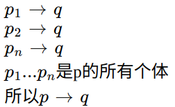
2.不完全归纳
简单枚举归纳：所碰到的部分对象都具有该种性质，没有发现反例，因此得出结论：该类对象都具有某种性质。
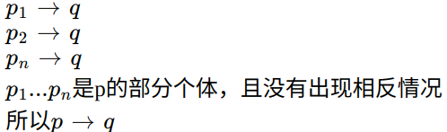
科学归纳：不是碰到一个就考察一个，而是只对典型的个体考察，通过对这部分对象的分析，得出结论：该类对象都具有某种性质
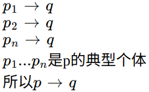
3.因果推理
求同法：只有一个条件相同，其他条件均不同，这个相同条件就是产生相同现象的原因。
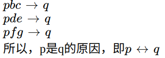
求异法：只有一个条件不同，其他条件均相同，这个不同条件就是产生不同现象的原因。
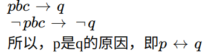
共变法：一个条件变化，其他条件均不变化，产生结果也变化，这个条件就是产生结果的原因。
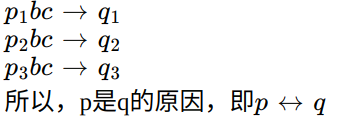
4.归纳三段论
跟演绎三段论相似，前提也是一般原理，只不过这个一般原理是个特称命题。
大多数p是q
这是p
所以，这是q
归纳三段论的强弱取决于p中q所占的比例，如果大于50%，那么就是强归纳，如果小于50%，那就是弱归纳
（八）论证
1.论证是什么
论证就是判定一个判断的真实性
2.论证组成部分是什么
论题
论据
论证方式
3.论证与推理的关系
联系：论证总是借助推理来进行。任何论证都是运用推理的过程。没有推理就无法构成论证。
区别：
思维过程相反。推理是从前提到结论，而论证是先有论题，再寻找论据证明论题，相当于从结论到前提。
推理不要求断定的前提和结论的真实性。而论证要求断定论据和论题的真实性。
4.论证的基本原则是什么
就是充足理由原则
充足理由原则是：A真，因为B真并且B能推出A
5.论证方式有哪些
（1）演绎论证
演绎论证是什么
是借助演绎推理进行的论证，即用一般原理论证特殊事实的一种论证。基本就是演绎三段论
论题是对特殊事实的判断。
论据是一般性原理
（2）归纳论证
归纳论证是什么
是借助归纳推理进行的论证
归纳论证，不能说是证明论题，而只能说支持论题，因为归纳推理是一种或然性推理，存在前提真，结论假的情况。
分为：归纳三段论，归纳概括（就是求同法的特殊情况），因果论证
①归纳三段论：
用一般原理论证特殊事实
论题是一个特殊事实
论据是一个一般原理
只不过这个一般原理不是全称命题，而是特称命题，比如
大多数X是Y
这是X
所以，这是Y
该论证的强度取决于Y在X中所占的比例。
②归纳概括：
用特殊事实的判断来论证一般原理
论题是一般性原理，相当于充分条件
论据是特殊事实的判断
③因果论证：
用特殊事实论证一般原理
论题是一个因果命题，相当于充要条件
论据是特殊事实判断
注意：
如果一个论证，前提中省略了一般原理，那么这个论证是演绎还是归纳，取决于补充的一般原理是全称的还是特称的。
比如，天要下雨了，因为刮南风了。如果补充的是刮南风之后总是下雨，那么就是演绎论证；如果补充的是刮南风之后大多数情况会下雨，那么就是归纳论证。
A真，因为B真且B->A，如果用文氏图表示，B包含于A时，B->A是全称命题，这个论证是演绎；B真包含A时或者B交叉A时，B->A变成特称命题，这个论证就变成归纳了。
如果A/B大于50%时，就是强归纳，小于50%时，就是弱归纳。
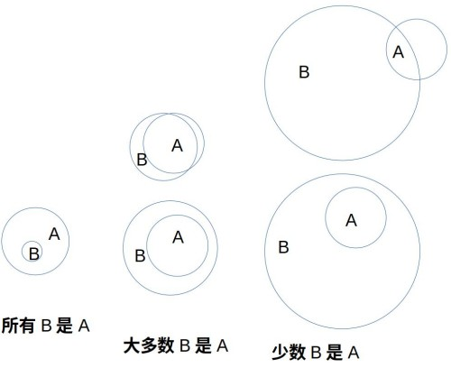
6.论证方法有哪些
（1）直接论证
是从论据直接推出论题的论证
（2）间接论证
又称反证法，通过论证反论题的虚假，从而论证原论题的真实
间接论证步骤是什么
三个步骤：
①设立反论题（原论题的负论题或者除原论题之外的所有可能论题）
②论证反论题虚假
③根据排中律，推出原论题为真
论证反论题虚假的方法有什么
要论证反论题的虚假，可以用两种方法：
①直接否定法
直接列举与反论题矛盾的证据
②归谬法
先假定反论题为真，并推出虚假的判断
然后根据假言推理的否定后件式，推出否定前件，从而论证反论题的虚假
7.论证的规则是什么
（1）关于论题的规则
①论题必须明确
②论题保持确定
（2）关于论据的规则
①论据必须真实
②论据的真实性不能依赖论题来说明
（3）关于论证方式的规则
就一条，论据与论题之间应有必然的逻辑关系，也就是能推出
违反这条规则，就会导致推不出谬误，常见推不出以下几种：
①推理形式不正确
②论题与论据不相干
③以人为据
④以相对为绝对
（九）反驳
反驳是什么
判定一个判断的真实性与论证的真实性相反
2.反驳方法
（1）反驳论题和反驳论据
论证论题和论据是虚假的
分为直接反驳和间接反驳
①直接反驳
又分为两种
a.直接否定法。直接列举出与论据和论题相矛盾的事实
b.归谬法。归谬法在论证中是间接论证，但在反驳中是直接反驳。
因为这时，它是以论题或论据为前件，推出一个荒谬的后件，然后，由否定后件到否定前件，从而论证论题或论据为假
②间接反驳
通过论证反论题的真实，论证原论题的虚假
（2）反驳论证方式
指出论据推不出论题，即指出推不出谬误
（十）论辩
1.论辩是什么
论辩是立论者与驳论者围绕辩题而展开的消除争议谋求共识的言语行为
2.论辩与论证的关系是什么
论辩需要借助论证实现。
论辩最常用的就是归纳论证和归谬法。由于双方观点往往不具有真理性，所以难以找到包含蕴含关系的一般命题，因此在论辩中难以使用演绎论证。不过，在反驳时，则会用归谬法进行强有力的反驳
3.论辩的结构是什么
（1）静态构成
①辩题
辩题也就是论题。辩题是论辩的中心话题，总是表现为两个相互对立的，不能同时为真的命题p和¬p
辩题分为三类：
a.事实性辩题
又叫描述性辩题，主要是判定孰真孰假
科学研究中的学术讨论、法庭上控辩双方的辩论等所涉及的往往就是事实性辩题。
类似“a是b”样子的命题。比如光是粒子，光不是粒子。
“a导致b”跟“a是b”在形式上是一样的。
因果命题也属于事实性论题，但是它比“a是b”多一个方面，它包括“a导致b”和“非a导致非b”两个方面。
论证因果论题时，要两个方面都要论证。
论证过程：
1）肯定式
论题：a是b或者a导致b
论证：a中b所占的比重越大，论题越真。也就是求a且b/a的值。这种论证一般称为归纳论证。
作这种论证时，基本上就是举例。每找到一个正例，论证就越强。这是为什么呢？因为每找到一个正例，a且b+1/a+1 >a且b/a。也就是说比值在变大，所以论证就变强。一般比值大于50%，我们就称之为强论证。
2）否定式
论题：a不是b或者a不导致b
论证：a中b所占的比重越小，论题越真。等价于a中非b所占的比重越大，论题越真。因为a中除了b就是非b，两者所占比重相加等于1。就是求a且非b/a的值。也是举例，原理与肯定式一样。
其实，a不是b，等价于a是非b。a不导致b，等价于a导致非b。
3）因果式
论题：a是b的原因。等价于a导致b，非a导致非b。
论证：要论证a导致b，就是求a且b/a的值；要论证非a导致非b，就是求非a且非b/非a的值。这种正反两面论证，叫做因果论证求同求异。也是举例。
求同求异就是相同因素导致相同结果，不同因素导致不同结果。
可以看出，普通归纳论证是因果论证的一半过程。
可以看出，a且b可以归纳出两个命题：
1.a导致b
2.b导致a
在日常使用时，要根据需要选择其中一个使用。
b.价值性辩题
主要是判定孰好孰坏
事关伦理或道德的社会性问题一般多属于价值性辩题，如，“离婚率上升是社会文明的表现”与“离婚率上升不是社会文明的表现”
类似“a是好的”样子的论题。如加税是好的，加税是不好的
形容词，副词，下定义，经常是价值性论题。
论证过程：
1.肯定式
论题：a是好的
论证：凡是导致b的就是好的，a能导致b，所以a是好的。这种论证叫做三段论论证。
三段论论证完之后，还得继续论证a能导致b，这就进入到事实性论题论证。
凡是导致b的就是好的，这个条件是我们默认的，叫做价值观假设，一般不用论证，而且经常省略，直接说a能导致b，所以a是好的。
另一种说法，凡是不能导致b的就是不好的，非a不能导致b，所以非a是不好的，就是a是好的。最后变成论证非a导致
2.否定式
论题：a是不好的
论证：凡是导致b的就是不好的，a导致b，所以a是不好的。也是三段论论证。最后变成论证a导致b。
还有另一种说法，凡是不能导致b的就是不好的，a不能导致b，所以a是不好的。最后变成论证a不能导致b。
同样大前提是我们的价值观假设，可以省略不进一步论证。
c.政策性辩题
又叫规范性辩题，主要是判定政策或行动是否必要
政策性辩题往往出现于立法、决策以及各种谈判活动之中。
如，“政府应该取缔互联网上的色情网站”与“政府不应该取缔互联网上的色情网站”
类似”应该做a“样子的论题。如应该加税，不应该加税。
论证过程：
1.肯定式
论题：应该做a
论证：凡是能导致b的就应该做，a能导致b，所以应该做a。也是三段论论证。
三段论论证完之后，还得进一步论证a导致b，进入事实性论题论证。
大前提是价值观假设，可以省略，不必论证。
还有另一种说法，凡是不能导致b的就不应该做，不做a不能导致b，所以不应该不做a，就是应该做a。最后变成论证非a导致非b。
2.否定式
论题：不应该做a
论证：凡是能导致b的就不应该做，a能导致b，所以不应该做a。三段论。最后论证a导致b。
另一种说法，凡是能导致b的就应该做，不做a能导致b，所以应该不做a。最后论证非a导致非b。
还有另一种说法，凡是不能导致b的就应该做，不做a不能导致b，所以应该不做a。最后论证非a导致非b。
②立论者
在论辩过程中主张命题 p 的人叫做立论者
③驳论者
坚持¬p 的人叫做驳论者
（2）动态展开
在自己的观点受到他人的责难时，还必须证明或重新证明己方论点的真实性，这就是辩护，也叫反反驳。
理想的论辩不仅有其静态的构成，而且还展开为一个由一系列的证明、反驳和辩护所组成的动态过程。
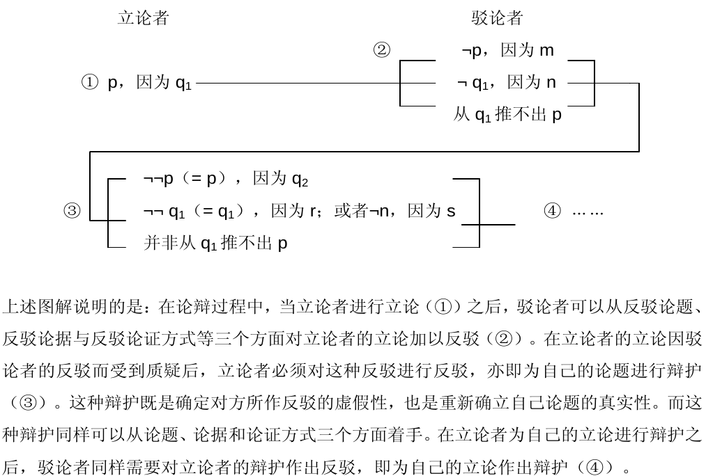
（十一）逻辑推理题型有哪些
1.演绎推理
（1）必然推出/哪个必然为真
①直接解法
直接由题干推出答案
②间接解法
先假设选项为假，如果推出矛盾，那么该选项不可能为假，必然为真，就选该选项；如果推不出矛盾，那么该选项可能为假，不必然为真，排除该选项，对下一选项重复此过程。
（2）不可能推出/哪个必然为假
①直接解法
②间接解法
先假设选项为真，如果推出矛盾，那么该选项不可能为真，必然为假，就选该选项；如果推不出矛盾，那么该选项可能为真，不必然为假，排除该选项，对下一选项重复此过程。
（3）可能推出/哪个可能为真
①直接解法
②间接解法
先假设选项为真，如果推出矛盾，那么该选项不可能为真，排除该选项；如果推不出矛盾，那么该选项可能为真，就选该选项
（4）不必然推出/哪个可能为假
①直接解法
②间接解法
先假设选项为假，如果推出矛盾，那么该选项不可能为假，排除该选项；如果推不出矛盾，那么该选项可能为假，就选该选项
2.归纳推理
基本不考
3.三段论论证
（1）做题顺序：
①找论题q
关键词：所以，因此
首尾句
问啥找啥
②找论据p
（2）题型
①加强论证
1）最能加强/支持/赞同/证明上述论断的是哪个选项
2）以下哪个选项是上述论断的前提/假设/必要条件
3）最不能加强上述论断的是哪个选项
解法：建立论点论据之间的必然关系p→q
②削弱论证
1）最能质疑/反驳/削弱/反对上述论断的是哪个
2）最不能质疑上述论断的是哪个
解法：否定论点¬q；打破论点论据之间的关系p∧¬q；否定论据¬p
4.因果论证
论点通常是一个因果关系命题，即充要条件，用符号表示就是p↔q
（1）做题顺序：
①找论点p↔q
关键词：因此，所以
首尾句
问啥找啥
②找论据p∧q，¬p→∧¬q
（2）题型：
①加强论证
1）最能加强/支持/赞同/证明上述论断的是哪个选项
2）以下哪个选项是上述论断的前提/假设/必要条件
3）最不能加强上述论断的是哪个选项
解法：求同法，相同条件只有一个，p∧q；求异法，不同条件只有一个 ¬p∧q；共变法p+∧q+
②削弱论证
1）最能质疑/反驳/削弱/反对上述论断的是哪个
2）最不能质疑上述论断的是哪个
解法：不求同，相同条件不只一个，p∧¬q；不求异，不同条件不只一个¬p∧q；不共变p+∧¬q+
5.朴素逻辑
两组及以上对象的对应关系
解法：
（1）直接法
条件真假确定时可以直接由题干推出答案，然后去选项中排除，读一句排一句
（2）间接法
条件真假不确定时，可以用间接法，就是先假设某个条件为真或者假，然后看是否推出矛盾。
分两种：
a.假设选项，其实就是代入法；
b.假设题干条件
朴素逻辑几大技巧
一、最大信息作为突破口（出现次数最多的词）
二、符号<>可以看出两者不对应
三、列表
将两类对象分别作为行和列，对应的画√，不对应的画×，同一行或同一列中，有且只有一个√
四、连线
找出两组对象的对应关系与不对应关系；
对应的画实线，不对应的画虚线；
一旦从一个对象发出一条实线，那就从这个对象向其他所有对象画虚线；就是说一个对象有且只有一条实线。